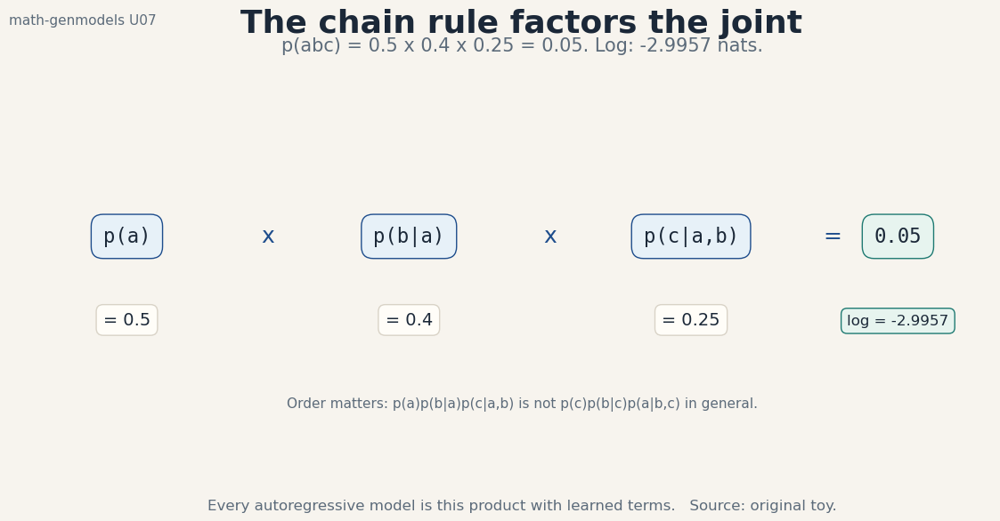
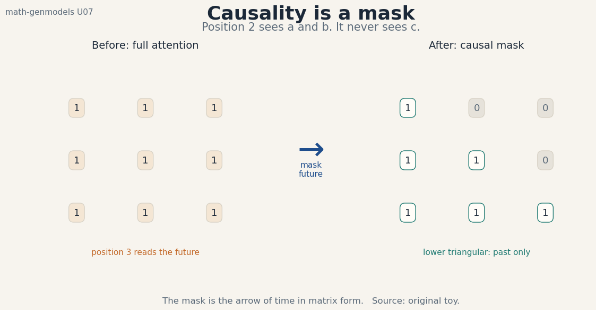
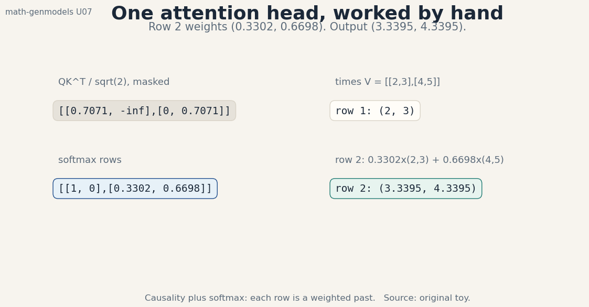
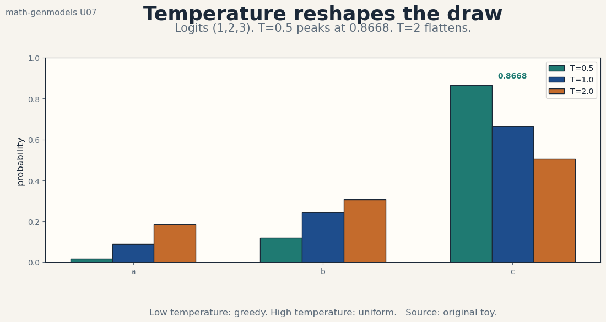

U07 · Autoregressive models and transformers
Lesson U07: Autoregressive models and modern bridges
Unit: math-genmodels-U07. Leaf concepts: math-genmodels-U07-C01 to C12. Date: 2026-10-06. Baseline: October 6, 2026.
Source mapping
This lesson is locally authored bridge content. It does not reproduce any instructor lecture. Source attribution for the leaf concepts is PENDING: SRC-01 is unresolved, SRC-04 was not retrieved, and SRC-03 notebooks and PDFs were not inspected (see source_manifest.md, source_gaps.md G1-G7). The mathematics below is standard textbook material restated as an independent bridge. Status of every leaf: PLANNED / SOURCE ATTRIBUTION PENDING.
Scope and objectives
Scope: sequence models that factor the joint law left to right. The chain rule, conditional densities, discrete tokens, teacher forcing, causal networks, the transformer, sampling, exact likelihood, context cost, masked objectives, flow matching as a labeled extension, and model comparison.
Objectives: after this lesson the learner can factor a joint law by hand, write a conditional table, compute NLL and perplexity on a toy, explain teacher forcing and exposure bias, read a causal mask, work one attention head by hand, sample at three temperatures, cost attention at L = 512, separate masked from autoregressive objectives, write the flow-matching loss, and compare model families on equal footing.
Dependencies: P13, P14, P15. Shared modules are linked in prerequisites.md. Each concept below still carries local remediation. U01 supplies likelihood and entropy. No later unit is used.
The running toy
Alphabet {a, b, c}, sequence “abc”. p(a) = 0.5, p(b|a) = 0.4, p(c|a,b) = 0.25. Key numbers: p(abc) = 0.05, log p = -2.9957 nats, NLL = 2.9957, perplexity 2.7144. Attention toy: Q = K = I_2, V = [[2,3],[4,5]], causal. Row 2 weights (0.3302, 0.6698), output (3.3395, 4.3395). Every number in this lesson was computed from these definitions or from seed 12 draws stated in the text. Figure scripts print the audited values.
C01, chain rule
Motivating question: a sequence has one joint law. How do we write it as steps?
Start from zero. p(abc) = p(a) x p(b|a) x p(c|a,b) = 0.5 x 0.4 x 0.25 = 0.05. Each term conditions on everything before it. The product is exact: no approximation, no bound. Figure u07_f01_chain_rule.png shows the three factors multiplying to 0.05.

The idea: the chain rule factors any joint law into a product of conditionals, one per position. The order is a choice: left to right is the autoregressive order. The factorization is always valid. Different orders give different conditionals for the same joint. The model learns each conditional. Sampling draws a, then b given a, then c given a and b.
Computed example: 0.05 above. Reverse order: p(c) x p(b|c) x p(a|b,c) is also 0.05 with different numbers. The product is order-free. The factors are not.
Variables, units, shapes, assumptions: the sequence has length L, the alphabet has size V. Assumption: the order is fixed before training. Changing the order changes every conditional.
Mechanism: apply the definition of conditional probability L - 1 times. Each step peels off one variable. What remains is the product.
Code:
p_seq = 0.5 * 0.4 * 0.25
print(p_seq) # 0.05
Check: the factors must multiply to a valid joint: sum over all 27 sequences equals 1. Verify on the toy tables.
Cost: L conditional evaluations per sequence. The factorization itself is free.
Alternatives: no factorization (model the joint directly: intractable for large L). Bidirectional conditioning (no valid product). Use the chain rule when exact likelihood matters.
Failure case: an inconsistent set of conditionals that do not come from one joint. The “probabilities” then sum to something other than 1. Always derive conditionals from one joint.
Research reading: sequence modeling texts (background). Falsifiable extension: none at this level. The claim is an identity with a worked number.
Status: PLANNED / SOURCE ATTRIBUTION PENDING.
C02, conditional density
Motivating question: each factor is a law of its own. What does it look like?
Start from zero. p(b|a) = 0.4 is one row of a conditional table. The full table for position 2: p(a|a) = 0.35, p(b|a) = 0.4, p(c|a) = 0.25. Each row sums to 1. The model outputs one row per context: given “a”, the next-token law is (0.35, 0.4, 0.25).
The idea: a conditional density is a proper law over the next token, indexed by the context. The network maps each context to a distribution. Training fits all rows at once. The number of possible contexts is V^L: the network generalizes across them instead of tabulating them.
Computed example: the row above sums to 1.0. The most likely next token after “a” is b at 0.4.
Variables, units, shapes, assumptions: each row is a vector in the V-simplex. Assumption: the context determines the row. Markov truncations (n-grams) keep only the last n tokens.
Mechanism: softmax over V logits gives the row. The logits come from the network’s readout. Cross-entropy against the true next token trains the row toward the data conditional.
Code:
row = np.array([0.35, 0.4, 0.25])
print(row.sum()) # 1.0
Check: every row sums to 1. A row that does not is a bug in the softmax.
Cost: O(V) per position for the softmax. Large vocabularies dominate the readout cost.
Alternatives: hierarchical softmax (tree-structured, cheaper). Sampled softmax (approximate). Use full softmax unless V forces otherwise.
Failure case: a model that outputs the same row for every context. It learned the marginal, not the conditionals. The loss plateaus at the unigram entropy. Diagnose per-context.
Research reading: language modeling texts (background). Falsifiable extension: none at this level. The claim is a definition with a worked row.
Status: PLANNED / SOURCE ATTRIBUTION PENDING.
C03, discrete tokens
Motivating question: the data are symbols, not vectors. How do probabilities attach to them?
Start from zero. Logits (1, 2, 3) for (a, b, c). Softmax: (0.0900, 0.2447, 0.6652). Token c has probability 0.6652. The NLL of observing c is -log 0.6652 = 0.4076. Discrete tokens turn the density into a table: probability mass on V points, zero everywhere else.
The idea: discrete modeling replaces densities with probability mass functions. No Jacobian, no score, no boundary blowup: the math of U04 and U06 simplifies to tables. The cost moves to the vocabulary: V = 50,000 makes the softmax the bottleneck. Tokenization (P13) decides what the atoms are, and the model never sees anything smaller.
Computed example: the softmax above sums to 1. NLL 0.4076 for token c. For the full sequence “abc”: NLL = 2.9957.
Variables, units, shapes, assumptions: V is the vocabulary size. Logits in R^V. Assumption: the tokenization is fixed. Changing it changes every probability.
Mechanism: embed the token, run the network, read out logits, softmax, cross-entropy. Five steps from symbol to loss.
Code:
probs = np.exp([1., 2., 3.])
probs = probs / probs.sum()
print(probs) # [0.09 0.2447 0.6652]
Check: probabilities sum to 1 and the argmax matches the max logit.
Cost: O(V) softmax per position. Embedding lookup is O(1).
Alternatives: continuous relaxations (Gumbel-softmax for gradients through samples). Byte-level models (small V, long L). Use tokens when the data have natural atoms.
Failure case: comparing NLL across tokenizations. Finer tokens mean more terms: the total changes with the vocabulary. Compare perplexity per character or per byte, not per token.
Research reading: tokenization texts (background). Falsifiable extension: none at this level. The claim is a computation.
Status: PLANNED / SOURCE ATTRIBUTION PENDING.
C04, teacher forcing
Motivating question: training sees true prefixes. Sampling sees its own outputs. Does the difference matter?
Start from zero. Train on “abc”: the loss uses the true “a” when predicting b, and the true “ab” when predicting c. NLL = 2.9957. At sampling time, the model draws its own first token: suppose it draws “c” instead of “a”. It now conditions on a context it never saw in training. Errors compound: one wrong token shifts every later conditional.
The idea: teacher forcing feeds ground-truth prefixes during training. It is fast (all positions in parallel) and stable. The price is exposure bias: the model never learns to recover from its own mistakes. Scheduled sampling mixes in model predictions during training to close the gap, at the cost of slower, sequential training.
Computed example: training NLL 2.9957 uses true prefixes. If the sampler draws “c” first (probability 0.2 under a weak model), the remaining conditionals p(b|c), p(c|cb) are off-distribution. The sequence quality degrades beyond what the NLL predicts.
Variables, units, shapes, assumptions: training is parallel over positions. Sampling is serial. Assumption: the training distribution covers the sampling contexts. Exposure bias is exactly the violation of this.
Mechanism: with true prefixes, every position’s loss is independent given the data: one forward pass trains all L. With model prefixes, position t needs the sample from t - 1: serial and non-differentiable without tricks.
Code:
# teacher-forced NLL uses the true "ab" prefix for the last term
nll = -(np.log(0.5) + np.log(0.4) + np.log(0.25))
print(nll) # 2.9957
Check: shuffling the training sequences must not change the loss: each position conditions on its own true prefix.
Cost: teacher forcing is O(1) sequential steps. Scheduled sampling is O(L).
Alternatives: professor forcing (match hidden dynamics). Diffusion-style corruption (no prefixes at all). Use teacher forcing as the default and scheduled sampling when samples degrade.
Failure case: a model with great NLL and terrible samples. The NLL never tested recovery. Evaluate samples, not just loss.
Research reading: exposure bias texts (background). Falsifiable extension: train the toy model with pure teacher forcing versus 50 percent scheduled sampling. Sample 1,000 sequences from each. Measure the fraction matching the true top sequences. Report the gap.
Status: PLANNED / SOURCE ATTRIBUTION PENDING.
C05, causal networks
Motivating question: how does a network know not to peek at the future?
Start from zero. Three positions, one weight matrix per layer. The causal mask is lower triangular: position 2 reads positions 1 and 2, never 3. Figure u07_f02_causal_mask.png shows the full matrix against the masked one. The mask is applied before the softmax: future scores become -inf, future weights become 0.

The idea: causality is enforced structurally, not by hope. A masked convolution, a masked dense layer, or masked attention all guarantee that output t depends only on inputs up to t. The guarantee is exact: no gradient path from the future to the past exists. Without the mask, the model cheats: it reads the answer it must predict, the loss collapses, and the model cannot sample.
Computed example: the 3x3 mask has 6 ones and 3 zeros. Position 3 sees all three. Position 1 sees only itself.
Variables, units, shapes, assumptions: the mask is L x L, fixed. Assumption: the mask is applied at every layer. One unmasked layer leaks the future through the whole network.
Mechanism: scores + mask, then softmax. -inf becomes 0 weight. The backward pass carries no gradient through masked entries.
Code:
mask = np.tril(np.ones((3, 3)))
print(mask.astype(int))
Check: the mask must be lower triangular with ones on the diagonal. Any 1 above the diagonal is a leak.
Cost: the mask is free: it is added once per layer.
Alternatives: recurrent networks (causal by construction, serial). Dilated causal convolutions (parallel training, fixed receptive field). Use masked attention for the best quality per flop.
Failure case: a forgotten mask in one layer. Training loss looks miraculous. Sampling produces garbage because the model learned to copy the future. Always test: shift the input by one and confirm the outputs shift too.
Research reading: causal architecture texts (background). Falsifiable extension: none at this level. The claim is structural with a worked mask.
Status: PLANNED / SOURCE ATTRIBUTION PENDING.
C06, transformer
Motivating question: what computation sits inside one attention head?
Start from zero. Q = K = I_2, V = [[2,3],[4,5]], causal mask. Scores QK^T/sqrt(2): [[0.7071, -inf],[0, 0.7071]]. Softmax rows: [1, 0] and [0.3302, 0.6698]. Output: row 1 = [2, 3], row 2 = 0.3302 x [2,3] + 0.6698 x [4,5] = [3.3395, 4.3395]. Every number is on Figure u07_f03_attention_toy.png.

The idea: attention is a data-dependent weighted average. QK^T scores every past position. Softmax turns scores into weights. The weights mix the values. Multiple heads run this in parallel subspaces. The feedforward block then processes each position independently. Residuals and normalization keep the stack trainable.
Computed example: the head output above. Row 1 attends only to itself: the mask forces it. Row 2 splits between the two past positions.
Variables, units, shapes, assumptions: Q, K, V in R^{L x d}. Scores in R^{L x L}. Assumption: the causal mask is applied before softmax. d_k scaling keeps the softmax out of saturation.
Derivation: softmax(QK^T/sqrt(d_k)) V. The scaling is 1/sqrt of the key dimension: it keeps the dot products O(1) at init so the softmax starts diffuse.
Code:
out = softmax(scores + mask) @ V
print(out[1]) # [3.3395 4.3395]
Check: each row of weights sums to 1. Row 1 must equal V row 1 exactly under the causal mask.
Cost: O(L^2 d) time, O(L^2) memory for the scores. The quadratic term dominates long contexts (C09).
Alternatives: linear attention (kernel trick, O(L d)). State-space models (recurrent, O(L d)). Use full attention until L forces otherwise.
Failure case: forgetting the 1/sqrt(d) scale. Scores grow with d, the softmax saturates, gradients vanish at init. Training never starts. The scale is load-bearing.
Research reading: transformer texts (background). Falsifiable extension: none at this level. The claim is a worked computation.
Status: PLANNED / SOURCE ATTRIBUTION PENDING.
C07, sampling
Motivating question: the model outputs probabilities. How do probabilities become text?
Start from zero. Logits (1, 2, 3). Temperature 1: (0.0900, 0.2447, 0.6652). Temperature 0.5: (0.0159, 0.1173, 0.8668): sharper, near-greedy. Temperature 2: (0.1863, 0.3072, 0.5065): flatter, more diverse. T -> 0 is argmax. T -> infinity is uniform. Figure u07_f04_temperature.png shows all three.

The idea: sampling divides the logits by T before the softmax. Temperature is the exploration knob: low T exploits the best token, high T explores the tail. Top-k and top-p (nucleus) truncate the tail first, then sample: they remove the embarrassing low-probability tokens that high T would otherwise surface. The sampler is part of the model as deployed: the same checkpoint behaves differently at different T.
Computed example: the three distributions above. At T = 0.5, token c wins with 0.8668. At T = 2, token a still gets 0.1863: one draw in five is the worst token.
Variables, units, shapes, assumptions: T > 0, unitless. Assumption: the logits are calibrated. Miscalibrated logits make T uninterpretable.
Mechanism: softmax(logits / T). Top-p keeps the smallest set with cumulative mass p, renormalizes, samples. Ancestral sampling draws one token, appends it, repeats.
Code:
print(softmax(logits / 0.5)) # sharp
print(softmax(logits / 2.0)) # flat
Check: T = 1 must return the plain softmax. As T -> 0 the mass must concentrate on the argmax.
Cost: one softmax per step, serial over L. Sampling is the slow direction (U04-C10 has the same asymmetry).
Alternatives: beam search (approximate MAP, deterministic). Greedy (T = 0). Use sampling for diversity, beam for fidelity.
Failure case: high T without truncation. The tail contains tokens the model barely understands. Samples ramble. Truncate first, then temper.
Research reading: decoding texts (background). Falsifiable extension: sample 1,000 tokens at T = 0.5, 1, 2 from the toy law. Measure the empirical frequencies against the three distributions. Confirm the match.
Status: PLANNED / SOURCE ATTRIBUTION PENDING.
C08, exact likelihood
Motivating question: what is the model’s exact score on one sequence?
Start from zero. log p(abc) = log 0.5 + log 0.4 + log 0.25 = -2.9957 nats. Exact. No bound, no sampling. Perplexity = exp(2.9957/3) = 2.7144: the model’s effective branching factor per token. A uniform model over 3 tokens has perplexity 3. The toy model is slightly better than uniform.
The idea: autoregressive models share the flow family’s exact likelihood (U04-C08): the factorization is exact, so the sum of log-conditionals is the true log joint. This makes model comparison honest: two AR models’ NLLs are directly comparable on the same tokenization. Perplexity is the per-token geometric mean: exp(NLL / L). Lower is better, but only within one tokenization (C03).
Computed example: -2.9957 and 2.7144 above. Compare a uniform baseline: NLL = 3 x log 3 = 3.2958, perplexity 3. The toy wins by 0.3 nats.
Variables, units, shapes, assumptions: NLL in nats per sequence. Perplexity unitless. Assumption: same tokenization across compared models. Violated comparisons are meaningless.
Derivation: the chain rule in logs. Perplexity is the exponential of the mean negative log-probability.
Code:
nll = -(np.log(0.5) + np.log(0.4) + np.log(0.25))
print(nll, np.exp(nll / 3)) # 2.9957 2.7144
Check: perplexity of a uniform V-token model must equal V exactly.
Cost: one forward pass scores the whole sequence. Parallel over positions.
Alternatives: VAE bound (inexact). GAN (no likelihood). Use AR when the number itself must be exact.
Failure case: comparing perplexities across tokenizations. Byte-level perplexity and token-level perplexity live on different scales. Normalize to bits per character first.
Research reading: language modeling evaluation texts (background). Falsifiable extension: none at this level. The claim is a computation.
Status: PLANNED / SOURCE ATTRIBUTION PENDING.
C09, context cost
Motivating question: the model reads 512 tokens. What does that cost?
Start from zero. L = 512, d = 64. Attention multiplications: L^2 x d = 512^2 x 64 = 16,777,216. About 16.8M mults per head per layer for the scores alone. The scores matrix is 512 x 512: 262,144 entries. KV cache per layer per sequence in fp32: 2 x 512 x 64 x 4 bytes = 262,144 bytes = 256 KB. Ten layers: 2.5 MB per sequence. Batch 32: 80 MB just for cache.
The idea: attention is quadratic in L. Doubling the context quadruples the cost. Training pays it once per batch. Inference pays it per generated token: each new token attends to all past tokens, so generating L tokens costs O(L^3) naive or O(L^2) with KV caching. The cache trades memory for recompute: store K and V, never recompute them.
Computed example: the numbers above. At L = 4096: 4096^2 x 64 = 1.07B mults per head. The quadratic wall is why long context needs sparse, linear, or recurrent attention.
Variables, units, shapes, assumptions: mults are multiply-adds. Cache in bytes. Assumption: fp32 cache. fp16 halves it. Quantized KV shrinks it further.
Mechanism: scores = QK^T is L x L. Softmax over rows. Times V. Every step is matrix multiplication: the cost is arithmetic intensity, and the L^2 matrix is the memory hog.
Code:
print(512 ** 2 * 64) # 16777216
print(2 * 512 * 64 * 4) # 262144 bytes
Check: the cache formula must scale linearly in L. Double L, double bytes.
Cost: O(L^2 d) time, O(L^2) memory per layer. The defining constraint of transformer scaling.
Alternatives: FlashAttention (same flops, less memory traffic). Linear attention (O(L d)). Sliding window (O(L w d)). Use the quadratic form until L or the budget says stop.
Failure case: generating without KV caching. Each token recomputes all KVs: O(L^3) total. Throughput dies at L = 512. The cache is not optional at scale.
Research reading: efficient attention texts (background). Falsifiable extension: time one attention layer at L = 128, 256, 512, 1024 with and without KV cache. Confirm the quadratic scaling and report the cache speedup.
Status: PLANNED / SOURCE ATTRIBUTION PENDING.
C10, masked objectives distinction
Motivating question: BERT masks tokens too. Is it the same model?
Start from zero. Mask the b in “abc”. BERT learns p(b | a, c): both sides visible. The product p(a) x p(b|a,c) x p(c) is not a valid factorization of p(a,b,c): the middle term conditions on the future. There is no ancestral sampler: to draw from a masked model you must iterate (Gibbs-style), and the result is not exact.
The idea: masked language modeling is a representation objective, not a generative one. It learns bidirectional context, which is excellent for understanding tasks. It does not define a joint law: the conditionals are incompatible (they need not come from one joint). Autoregressive modeling defines the joint exactly and samples from it. The two share the transformer but answer different questions.
Computed example: p(b|a,c) on the toy: with the true joint, p(b|a,c) = p(abc)/p(a,c). If p(a,c) = 0.2 and p(abc) = 0.05: 0.25. A valid conditional, but the triple (p(a), p(b|a,c), p(c)) does not factor the joint.
Variables, units, shapes, assumptions: the mask pattern is random per example. Assumption: 15 percent masking is the classic recipe. The rate is a hyperparameter, not a law.
Mechanism: replace some tokens with [MASK], predict them from both sides. The loss is cross-entropy on masked positions only. No causality, no chain rule, no sampler.
Code:
# p(b | a, c) from the joint: valid conditional, invalid factor
p_b_given_ac = 0.05 / 0.2
print(p_b_given_ac) # 0.25
Check: masked-model “likelihoods” do not sum to 1 over sequences. Never compare them with AR NLLs.
Cost: same transformer cost, bidirectional. No sampling cost because there is no sampler.
Alternatives: permutation language modeling (XLNet: AR over random orders, exact). Use masked models for understanding, AR for generation.
Failure case: sampling from BERT by iterative unmasking and calling it a generative model. The stationary law of the iteration is undefined. Samples look fluent and mean nothing probabilistically.
Research reading: masked modeling texts (background). Falsifiable extension: compute the “pseudo-likelihood” sum over all 27 toy sequences under the masked conditionals. Confirm it differs from 1. Report the gap.
Status: PLANNED / SOURCE ATTRIBUTION PENDING.
C11, flow matching as labeled extension
Motivating question: diffusion needs a noise schedule. Can we train the velocity directly?
Start from zero. x_0 = 0 (noise), x_1 = 2 (data), t = 0.25. The straight path: x_t = (1 - t) x_0 + t x_1 = 0.5. The target velocity: u = x_1 - x_0 = 2. The model predicts v = 1.8. Loss: (2 - 1.8)^2 = 0.04. That is conditional flow matching: regress the model’s velocity field onto the velocity of a chosen probability path.
The idea: flow matching drops the SDE and learns an ODE directly. Pick a path from noise to data (the straight line is the simplest). The target velocity is known in closed form given the endpoints. Train v_theta(x_t, t) to match it by regression. At sampling time, integrate the learned ODE. No noise schedule, no reverse kernels, no score: just a vector field and a solver. It is labeled “extension” here because it generalizes the diffusion objective while staying inside the autoregressive unit’s bridge theme: exact paths, learned dynamics.
Computed example: loss 0.04 above. Perfect prediction gives 0. The path at t = 0.5 sits at x = 1.0 with velocity 2.
Variables, units, shapes, assumptions: t in [0, 1], x_t on the segment. Assumption: the path is the straight interpolant. Curved paths (optimal transport couplings) give different targets.
Mechanism: sample endpoints, sample t, form x_t, regress. The marginal velocity field (averaged over endpoint pairs) is what the ODE needs, and the conditional regression recovers it.
Code:
loss = (2.0 - 1.8) ** 2
print(loss) # 0.04
Check: at t = 0 the path must equal x_0, at t = 1 it must equal x_1. The code must satisfy both endpoints.
Cost: one regression per sample, like DDPM. Sampling needs an ODE solver (C11 of U06).
Alternatives: diffusion score matching (equivalent under the Gaussian path). Rectified flow (straighter paths, fewer solver steps). Use flow matching when the path design matters.
Failure case: crossing paths. The straight interpolant from many endpoint pairs crosses itself. The averaged velocity field is still correct, but the conditional targets conflict and training slows. OT couplings reduce crossings.
Research reading: flow matching texts (background). Falsifiable extension: train v on the toy with independent versus OT-coupled endpoint pairs. Measure the loss curves. Report which converges faster.
Status: PLANNED / SOURCE ATTRIBUTION PENDING.
C12, model comparison
Motivating question: four families, one toy. Which wins?
Start from zero. The toy joint has p(abc) = 0.05, NLL 2.9957. An AR model reports -2.9957 exactly. A flow on the same discrete toy (with dequantization) reports approximately -2.9957 plus the dequantization gap. A VAE reports a bound: ELBO = -3.4, below the truth. A GAN reports no number at all: only samples. The comparison table:
| model | likelihood | exact? |
|---|---|---|
| AR | -2.9957 | yes |
| flow | about -2.9957 | yes, plus dequantization |
| VAE | -3.4 (bound) | no, lower bound |
| GAN | not defined | no |
The idea: compare models on what each can honestly report. Exact-likelihood families (AR, flows) compare by NLL directly. Bound families (VAE, diffusion with the simple loss) compare by bound with the gap labeled. Implicit families (GAN) compare by samples with precision/recall. Mixing the columns is the standard error: a VAE bound below a flow NLL proves nothing about the true likelihoods.
Computed example: the table above. The VAE bound -3.4 could hide a true -2.9 (better than the flow) or a true -3.4. The bound does not say.
Variables, units, shapes, assumptions: all numbers in nats on the same tokenization. Assumption: matched compute budgets. An AR model with 10x the parameters beating a tiny flow proves nothing about the family.
Mechanism: the comparison protocol. Fix the data, the tokenization, and the budget. Report each family’s native metric. State the gaps. Let the reader decide by their objective: exact scoring, sample quality, or speed.
Code:
print("AR exact -2.9957, VAE bound -3.4, GAN has no number")
Check: any comparison that ranks a bound against an exact number without labeling must be rejected.
Cost: the protocol costs one evaluation per model plus the budget matching. Cheap next to a training run.
Alternatives: human evaluation (final word on samples). Downstream task accuracy (the applied word). Use likelihood for science, tasks for product.
Failure case: “our GAN beats the flow on NLL” where the NLL came from a kernel density estimate on samples. The estimate is not the model’s likelihood. The comparison is void.
Research reading: generative comparison texts (background). Falsifiable extension: none at this level. The claim is a protocol with a worked table.
Status: PLANNED / SOURCE ATTRIBUTION PENDING.
Unit assessment (questions. Keys in lessons/keys/keys-u07.md)
Breadth recall (6)
B1. State the chain rule and evaluate p(abc) on the toy. B2. Define perplexity and compute it for the toy sequence. B3. Explain teacher forcing and name its failure mode. B4. Read the 3x3 causal mask: which positions does position 2 see? B5. Work the attention head: give row 2 weights and output. B6. State the flow-matching loss and evaluate the toy.
Deep ladders (2 ladders x 5 follow-ups)
L1 (exact likelihood, end to end): state the chain rule. Compute log p(abc). Convert to perplexity. Explain why the number is exact. Compare with a VAE bound on the same toy. L2 (the transformer, end to end): define the causal mask. Work the attention head by hand. Cost attention at L = 512. Explain KV caching. Predict the failure of generating without it.
Analytical exercises (2)
A1. Prove perplexity of a uniform V-token model equals V. Then prove NLL comparisons across tokenizations are invalid by constructing a counterexample. A2. Derive softmax(QK^T/sqrt(d_k)) row 2 for the toy from the definition, showing the mask step.
Implementation and debug (1)
D1. Training loss is excellent but samples are garbage. The mask is present in every layer. Name the bug, give the fix, and state the test that catches it. (Keys file holds the diagnosis.)
Changed-constraint scenarios (2)
T1. Context must grow to L = 32768 on fixed memory. Redesign attention and state what you lose. T2. The task needs bidirectional context and exact sampling. Show the conflict and propose the closest achievable design.
Research critique (1)
R1. “Our masked model gets lower pseudo-perplexity than their AR model, so it is the better generative model.” Attack this claim with two arguments from this unit and propose the fair experiment.
Lab pointer
labs/lab-u07.md holds 6 hands-on exercises: chain-rule audit, perplexity check, attention by hand, temperature sweep, cost model, flow-matching loss. Answers are in labs/keys/keys-u07.md.
Figure index
| Figure | Claim | Source |
|---|---|---|
| assets/u07/u07_f01_chain_rule.png | p(abc) = 0.05, log -2.9957 | original toy |
| assets/u07/u07_f02_causal_mask.png | Lower triangular mask | original toy |
| assets/u07/u07_f03_attention_toy.png | Row 2: (0.3302, 0.6698), (3.3395, 4.3395) | original toy |
| assets/u07/u07_f04_temperature.png | T=0.5 peaks 0.8668, T=2 flattens | original toy |
| assets/u07/u07_f05_chapter.png | Order is the model | original toy, seed 12 |
Alt text: each plate carries its claim in the title line and footer. The before/after panels are labeled in text on the figure.